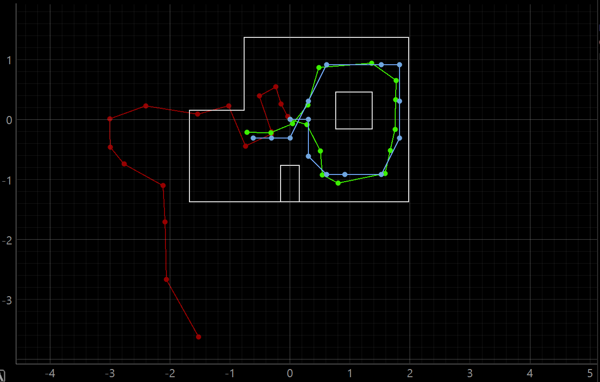
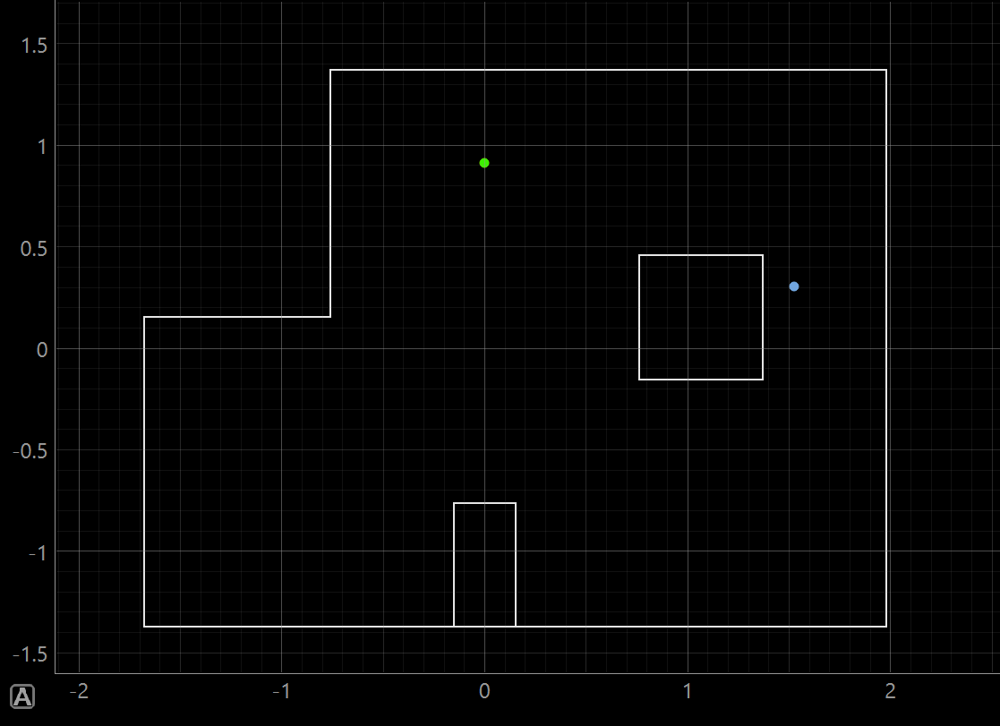
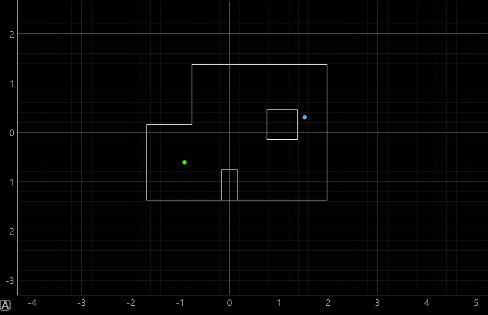
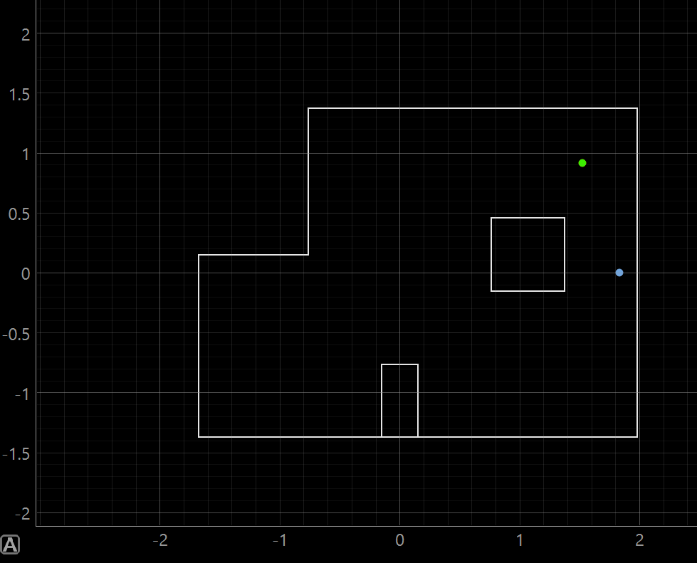
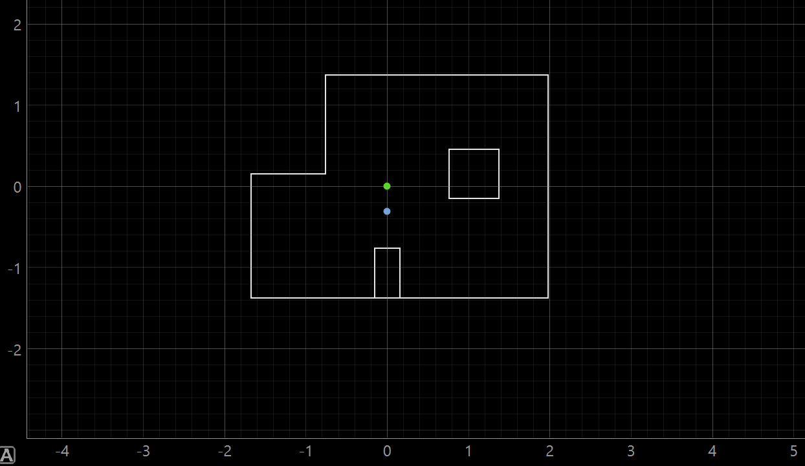
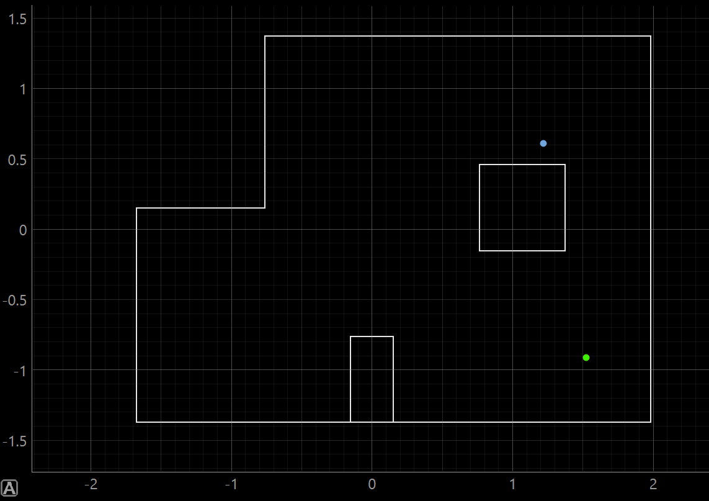

Lab 11: Localization on the Real Robot
In this lab I used the Bayes filter localization code on the real robot by collecting a 360 degree ToF scan and using the update step to estimate the robot's position in the map.
1. Objective
The goal of this lab was to localize the physical robot inside the map using the Bayes filter. Unlike the simulation lab, this lab focused on using real ToF sensor measurements from the robot instead of simulated observations. Since the real robot's motion is noisy, I only used the update step of the Bayes filter and did not rely on the prediction step for this lab.
To do this, I placed the robot at known ground truth poses, had it rotate and collect distance readings, then compared the localized belief pose to the actual robot pose.
2. Background: Bayes Filter Localization
Localization is the process of estimating where the robot is located in its environment. For this lab,
the robot's possible states were represented as a grid over x, y, and
theta. Each grid cell stores a probability that the robot is currently at that pose.
The belief with the highest probability after the update step represents the robot's best estimate of its pose. The update step compares the robot's measured ToF scan with the expected sensor readings from possible poses in the map. Poses that better match the real scan receive higher probability.
Main Idea
The real robot collects a full 360 degree scan, and the localization code checks which pose in the map would most likely produce that same scan.
3. Simulation Test
Before working with the real robot, I ran the provided simulation notebook to verify that the Bayes filter localization code worked correctly. The simulation plot shows odometry, ground truth, and belief. This helped confirm what the expected localization output should look like before adding Bluetooth and real sensor data.
Simulation Output: Odometry, Ground Truth, and Belief

4. Real Robot Setup
The real robot used the Artemis board, the ToF sensor, and the IMU yaw estimate. The Artemis handled the rotation and sensor reading collection, while the Python notebook handled Bluetooth communication and passed the scan data into the localization module.
I reused my orientation control structure from the previous labs. Before starting the scan, I sent the
orientation PID gains over Bluetooth using the GET_PID_ORI_GAINS_AND_ORIENTATION command.
Then I started notifications, sent the MAPPING command, and waited until the robot collected
18 readings.
Scan Structure
- Robot starts at a known ground truth pose.
- Robot rotates counter-clockwise.
- ToF readings are collected during the scan.
- 18 readings are used for the observation loop.
- The readings are returned as NumPy column arrays.
PID Gains Used
Kp = 2.75Ki = 0.00Kd = 20.0Initial target orientation = 0.0 deg
5. Python Observation Loop
The most important part of the real robot integration was implementing
perform_observation_loop(). Since I was using Bluetooth notifications and needed to wait for
data from the robot, I made this function asynchronous. The function sends the PID gains, starts BLE
notifications, commands the robot to begin mapping, waits until 18 ToF readings have been received, and
then returns the readings in the format needed by the localization code.
RealRobot Class and Observation Loop
class RealRobot():
"""A class to interact with the real robot"""
def __init__(self, commander, ble):
# Load world config
self.world_config = os.path.join(str(pathlib.Path(os.getcwd()).parent), "config", "world.yaml")
self.config_params = load_config_params(self.world_config)
# Commander to communicate with the Plotter process
self.cmdr = commander
# ArtemisBLEController to communicate with the Robot
self.ble = ble
def get_pose(self, location=None):
"""Get robot pose based on odometry"""
if location == 1:
pose = [0, 0.9144]
elif location == 2:
pose = [-0.9144, -0.6096]
elif location == 3:
pose = [1.524, 0.9144]
elif location == 4:
pose = [0, 0]
elif location == 5:
pose = [1.524, -0.9144]
else:
pose = [0, 0]
current_odom = pose
current_gt = pose
return current_gt, current_odom
async def perform_observation_loop(self, rot_vel=120):
"""Perform observation loop"""
# Send PID Gains
self.ble.send_command(CMD.GET_PID_ORI_GAINS_AND_ORIENTATION, "2.75|0.00|20.0|0.0")
print(self.ble.receive_string(self.ble.uuid['RX_STRING']))
await asyncio.sleep(3)
self.ble.start_notify(self.ble.uuid['RX_STRING'], notif_handler)
# Start mapping
self.ble.send_command(CMD.MAPPING, "")
while (len(Tof_Sensor_1_list) < 18):
await asyncio.sleep(.2)
self.ble.stop_notify(self.ble.uuid['RX_STRING'])
sensor_ranges = np.array(Tof_Sensor_1_list)[np.newaxis].T
sensor_bearings = np.array(Gyro_yaw_list)[np.newaxis].T
return sensor_ranges, sensor_bearings6. Ground Truth Poses
Since there is no automatic ground truth system for the real robot, I placed the robot at known positions in the map. The pose was manually set based on the marked floor locations. The heading was kept at 0 degrees so the scans would be easier to compare across different locations.
| Test | Ground Truth Pose | Ground Truth in Meters |
|---|---|---|
| Pose 1 | (0 ft, 3 ft, 0 deg) |
(0, 0.9144) |
| Pose 2 | (-3 ft, -2 ft, 0 deg) |
(-0.9144, -0.6096) |
| Pose 3 | (5 ft, 3 ft, 0 deg) |
(1.524, 0.9144) |
| Pose 4 | (0 ft, 0 ft, 0 deg) |
(0, 0) |
| Pose 5 | (5 ft, -3 ft, 0 deg) |
(1.524, -0.9144) |
7. Real Robot Localization Results
For each pose, I ran the update step using a uniform prior and the real sensor scan from the robot. The figures below show the robot's belief after localization. These plots are useful because they show where the Bayes filter thinks the robot is most likely located.
Pose 1: (0,3) ft

Pose 2: (-3,-2) ft

Pose 3: (5,3) ft

Pose 4: (0,0) ft

Pose 5: (5,-3) ft

8. Discussion
Overall, the robot was able to use real ToF scan data to localize itself in the map. My specific localization testing was not the greatest but is still showed how valuable Bayes Theory can be. The main difference between the simulation and real robot was the quality of the measurements. In simulation, the robot's scan is much cleaner and the rotation is ideal. On the real robot, the readings are affected by sensor noise, small errors in the robot's rotation, and the exact placement of the robot at each marked position.
The robot localized better at positions where the surrounding walls and obstacles created a more unique scan and are a little bit closer to walls of the enviorment. If two locations had similar distance patterns, the belief could spread out or move toward the wrong pose. This makes sense because the update step is only as strong as the sensor measurements it receives. For me to recieve more acurate data, the next step would be to increase the amount of tof scans. For this lab I used 1 Tof sensor, but I could use 2, and then change the increments from 20 deg to 10 deg for more scans.
One important takeaway is that real-world localization depends heavily on reliable sensing. Even though the Bayes filter works well in simulation, the real robot still needs accurate ToF readings, controlled rotation, and consistent starting orientation to produce a strong belief estimate.
9. Challenges
One challenge was the asynchronous Bluetooth structure. Since the robot was sending data back through notifications, the observation loop needed to wait until enough readings had arrived before stopping notifications and returning the arrays. Without waiting the python code would skip over the C++ code and the robot would do nothing. Figuring out how to use await and async code took some time.
Important Fix
Making perform_observation_loop() asynchronous allowed the code to properly wait for BLE data
while the robot was completing its scan.
10. Conclusion
This lab showed how localization changes when moving from simulation to the real robot. The Bayes filter update step was able to use the robot's 360 degree ToF scan to estimate its pose, but the accuracy depended on scan quality, sensor noise, and how closely the robot's actual motion matched the expected 20 degree increments. The lab also showed why real-world robotics is harder than simulation because even small errors in sensing and movement can affect the final belief.
11. Aknowledgements
For this lab I recieved help general code help from Jack Long's and Trevor Dales' Spring 2025 pages, and recieved help from Lalo Esparza on how to set up the get_pose code. I also used ChatGPT to help me develop my website page and to clean up my python code.